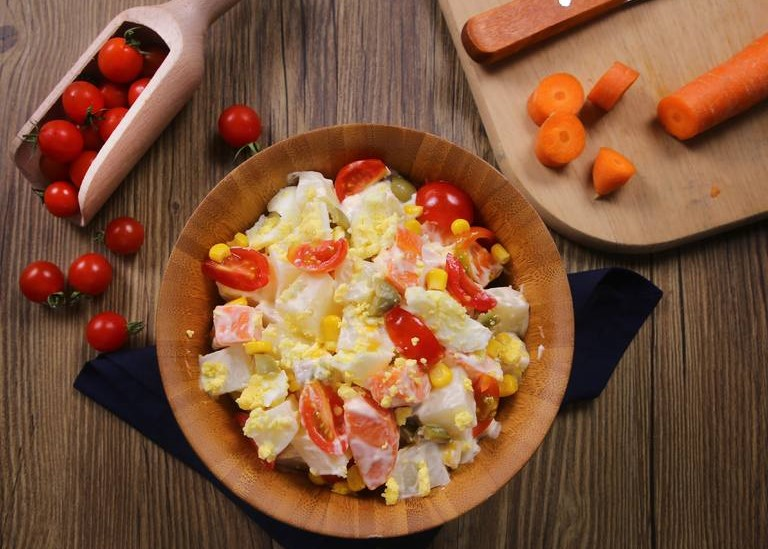

Perfeito para comer naquele almoço em família!

Ingredientes:
- 300 g de batata cerosa (6 unidades pequenas | 1 1/2 xícara de batata cortada em cubinhos de 1 cm)
- 200 g de cenoura (3 unidades médias | 1 xícara de cenoura cortada em cubinhos de 1 cm)
- 80 g de ervilhas congeladas (1/2 xícara)
- 80 g de vagem ou feijão verde frescos ou congelados (1/2 xícara cortada em cubinhos de 1 cm)
- 80 g de salsão/aipo (1 talo grande | 1/2 xícara de salsão cortado em cubinhos de 1 cm)
- 80 g de atum em conserva drenado, ao natural ou em azeite de oliva (opcional) (1 lata)
- 50 g de cebola (1 unidade média)
- 60 g de maionese caseira ou industrializada (1/4 xícara)
- 1/2 colher de chá de sal de pimenta-preta/pimenta-do-reino a gosto.
Todos os direitos reservados © Victor Varjão - Théo Alves - Sara Duarte